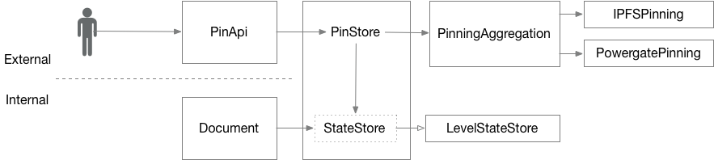

We wanted to add additional backend for pinning, namely on Filecoin through Powergate. Currently, pinning backend is tightly coupled with state store, that tracks full state of a Ceramic document.
We want to:
Ceramic node supports storing state of a document and pinning it. While storing state, full state of the document is serialised and stored into a local database. While pinning, all of the document records, as well as dependent ones, like proofs, are pinned.
Storing state is internal operation, i.e. called inside Document methods. Pinning a document is requested externally via PinApi. When a document is pinned, it has to also be stored in the state store.
If treated as a black box the pinning and state store block exposes following functions:
docIddocIddocIdHaving multiple pinning backends simultaneously leads to distributed transactions, if done thoroughly. We have following expectations:
pin on all the backends, yet it treats unpin operation on best effort basis.Thus, instead of distributed transactions, we can use light-weight Promises.
Based on the semantics, it makes sense to have:

Legend:
Figure above represents all the components working together. External calls through PinApi trigger PinStore to save state in StateStore and pin using PinningAggregation. StateStore block here represents an interface that is implemented by LevelStateStore (persistence on LevelDB). PinningAggregation and particular IPFSPinning and PowergatePinning implement same Pinning interface, so one could choose to put a particular pinning backends into PinStore instead of aggregation. PinningAggregation instantiates pinning backends based on passed connection strings, see below.
One could extend the scheme presented. To add a new pinning backend, one should add one more class implementing Pinning interface and add it to a list of available backends. Adding a new state store backend is out of scope. Yet, to achieve this one has to basically mimic Aggregation/Backend pattern used for IPFS. Namely, one could add one more implementation of StateStore interface, and provide a state store factory that selects one of the backends based on runtime configuration parameters
We want to achieve common way of configuring different pinning backends, that should work for CLI as command-line parameter, as well as for environment variable. For backends it should contain host-port of the used service endpoint, as well as additional authentication information. Considered YAML/JSON configuration file and URL Connection string. The latter seems to fit the bill without introducing a heavy indirection layer.
Connection string is formed as valid URL, for example:
ipfs://localhost:5001
ipfs+https://example.com:3342
powergate+http://example.com:4001Every pinning backend is assigned a unique string that we call designator below. PinningAggregation gets a protocol component of connection strings passed, gets the first part of it before an optional plus (+) symbol, and treats it as a designator for a backend.
For the examples above, designator searched is ipfs. Rest of the connection string is parsed by particular backend.
IPFS. Connection string looks like ipfs://<host>:<port> or ipfs+http://<host>:<port> or ipfs+https://<host>:<port>. It is translated into http://<host>:<port>, http://<host>:<port>, https://<host>:<port> correspondingly.
Powergate. Powergate requires token for authentication purposes. We pass it as a query param. Connection string looks like powergate://<host>:<port>?token=<token>, powergate+http://<host>:<port>?token=<token> or powergate+https://<host>:<port>?token=<token>. It is translated into http://<host>:<port>, http://<host>:<port>, https://<host>:<port> correspondingly, and set the token passed.
For CLI defined in ceramic-cli package, we add additional --pinning option. It accepts a connection string as defined above. There could be multiple --pinning options. They would initialize corresponding number of independent pinning backends.
For example, this would start ceramic daemon with three backends. One is on Powergate, that is Filecoin, another is on operational IPFS node used by Ceramic node, and the third one uses additional IPFS node, for redundancy.
$ ceramic daemon --pinning "powergate+http://localhost:6002?token=940a1a4d-ce97-459d-996e-461209e9c863" --pinning "ipfs://__context" --pinning "ipfs+https://remote.cloud.com:5006"